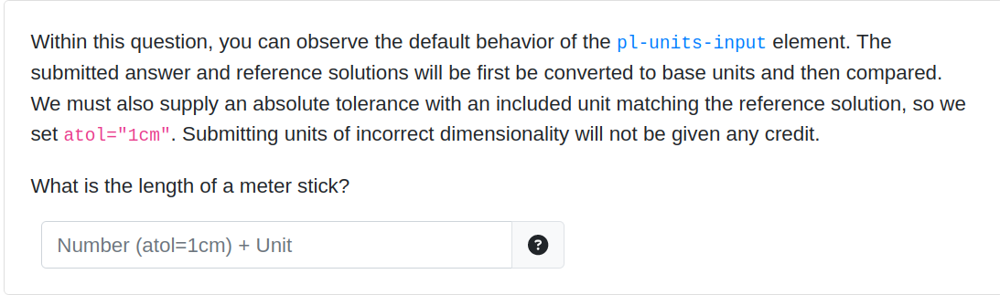
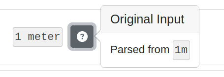
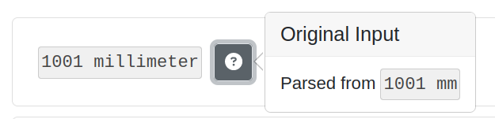
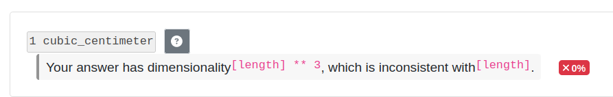

Thanks to Eliot Robson (UIUC), PrairieLearn now has a new pl-units-input element.
.
This element can be used to create problems where students must input a quantity with an accompanying unit. By default, input of the same dimensionality as the reference solution is automatically converted and compared.
Below are submission panels for correct answers. For the second one, the comparison was performed independent of units and within the given tolerance (1cm).
 Note in the following example that the provided submission had incorrect dimensionality, and no comparison could be performed.
Additional comparison methods are available without this automated conversion, along with other customization options. The code that generates the above question is:
<pl-units-input answers-name="c_1" correct-answer="1m" atol="1cm"></pl-units-input>
For more information, see the pl-units-input documentation or the pl-units-input example question.
Want to help make PrairieLearn better? It's open source and contributions are welcome!